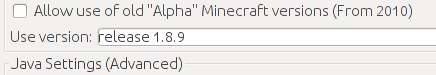
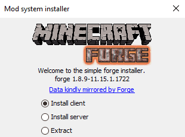
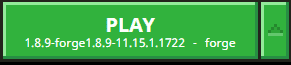
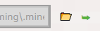

Introduksjon
ComputerCraft er en mod til Minecraft, som gir deg muligheten til å bygge og programmere datamaskiner og roboter inne i Minecraft-verdenen.
Installering av ComputerCraft
ComputerCraft er en mod til Minecraft, og krever derfor at Minecraft allerede er installert på datamaskinen. Vi antar at du er kjent med og har installert Minecraft.
ComputerCraft er typisk ikke tilgjengelig for siste versjon av Minecraft. Legg derfor merke til hvilken versjon av Minecraft som kreves (i eksemplene nedenfor kreves versjon 1.7.10, men dette kan endre seg), og pass på at du installerer riktig versjon av Forge.
Sjekkliste
-
Gå til computercraft.info/download. Bla nedover på siden til du finner et avsnitt som heter Download and installing. Last ned ComputerCraft til datamaskinen din, og noter deg hvilken versjon av Minecraft denne er kompatibel med (for eksempel versjon 1.7.10). Ikke prøv å kjør filen, vi skal kopiere den til riktig sted litt senere.
-
Start Minecraft Launcher. Sjekk om du har den riktige versjonen av Minecraft tilgjengelig. Hvis ikke kan du velge
New Profileog i nedtrekksmenyenUse Versionvelger du riktig versjon. Gi profilen et navn (for eksempel versjonsnummeret) og klikkSave Profile. KlikkPlayslik at denne versjonen blir lastet ned og startet opp. Avslutt spillet.
-
Før vi kan legge inn ComputerCraft må vi installere Minecraft Forge, som gir oss tilgang til å legge inn Mods. Gå til files.minecraftforge.net og velg den riktige Minecraft-versjonen i menyen som heter Minecraft Versions midt på skjermen. Pass på at riktig versjonsnummer vises under tittelen på toppen av skjermen.
I boksen Download Recommended velger du
Installer. Du kommer nå til en reklameside. Vent til nedtellingen øverst til høyre er ferdig. Klikk deretter påSkipog nedlastingen av en fil starter.
-
Kjør filen som ble lastet ned ved å dobbelklikke på den (om du blir spurt hvordan den skal kjøres kan du velge Java eller JDK). Velg
Install clientog klikkOK.
-
Start Minecraft Launcher. Det har nå dukket opp en ny profil som heter
Forge. Velg denne og start spillet. Dette vil lage enmods-katalog iMinecraft-katalogen din. Du vil også se at det har dukket opp et nytt valg i hovedmenyen:Mods. Avslutt spillet igjen.
-
Finn
Minecraft-katalogen din ved å starte Minecraft Launcher. Velg deretterEdit Profileog klikk knappenOpen Game Dir. Dette åpner en filutforsker. Velg katalogenmods, og kopier ComputerCraft-filen vi lastet ned helt først inn imods-katalogen. KlikkCanceliEdit Profile-vinduet.
-
Nå er vi ferdige. I Minecraft Launcher kan du nå velge profilen
Forgeog klikkePlay. Når du klikkerModsfra hovedmenyen skal du se at ComputerCraft er en av de tilgjengelige mods'ene.
Minecraftkatalogen
Minecraftkatalogen er nyttig å kjenne til. Som nevnt over kan du finne
den ved å klikke Open Game Dir fra Edit Profile-vinduet.
Alternativt kan du hente den frem selv som følger:
Windows: Under Windows finner du Minecraft-katalogen under
%appdata%\.minecraft. Søk etter %appdata% i en utforsker eller i
kjør-feltet etter å ha klikket start-knappen.
Mac OS X: Under Mac ligger Minecraft-katalogen i
Library/Application Support/minecraft/ under hjemmekatalogen din. På
norsk heter Library Bibliotek.
Linux: På Linux finner du Minecraft-katalogen som en skjult
katalog .minecraft rett under hjemmekatalogen din.
Kom i gang
Vi er nå klare til å slå oss opp som programmerere i Minecraft-verdenen. Mens vi utforsker datamaskinene er det enklest med et rolig og enkelt spill:
Sjekkliste
-
Velg
Singleplayer, og klikkCreate New World. -
Gi verdenen din et navn, og sett
Game ModetilCreative. KlikkCreate New World. -
Du kan nå lage din første datamaskin. Trykk
Efor å gå til Inventory-listen. Øverst kan du nå velge å klikke>for å gå til neste side. Trykk deretter på datamaskin-symbolet (en grå kloss/skjerm), og gi deg selv en Advanced Computer. -
Sett ut en Advanced Computer ved å høyre-klikke. Høyre-klikk så en gang til på datamaskinen du nettopp satte ut. En svart skjerm skal dukke opp, med teksten
CraftOSog et versjonsnummer i øverste linje. Skrivhelpog trykk enter for å komme igang.
Gratulerer! Du har startet en datamaskin inne i Minecraft-verdenen. På kodeklubben.github.io finner du oppgaver som viser deg hvordan du kan programmere den og andre datamaskiner og roboter i ComputerCraft. Lykke til!